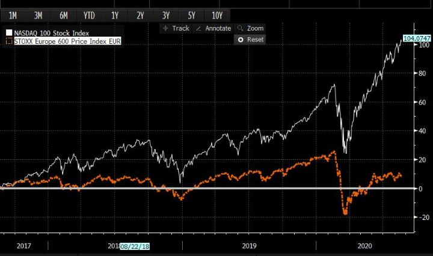
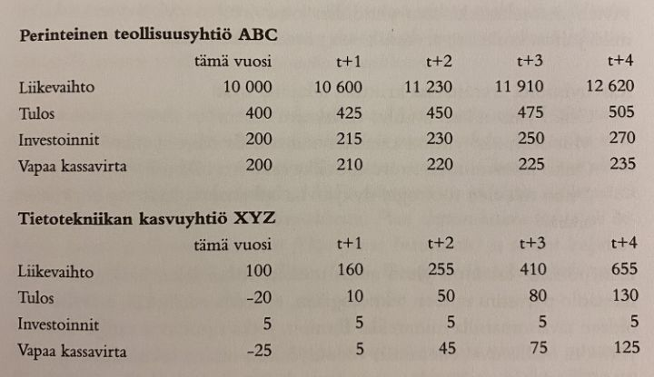
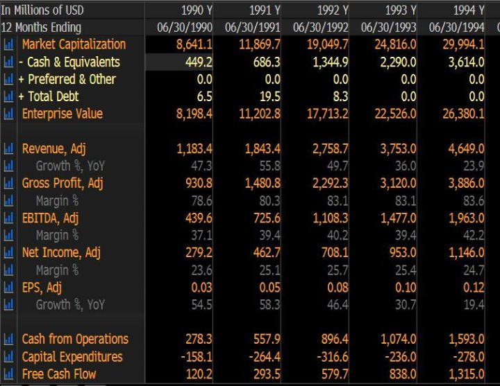
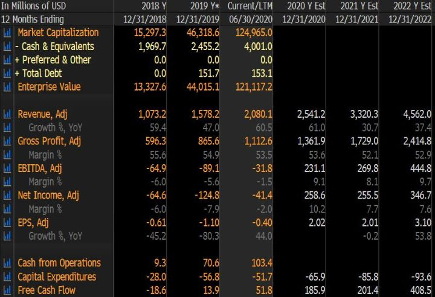
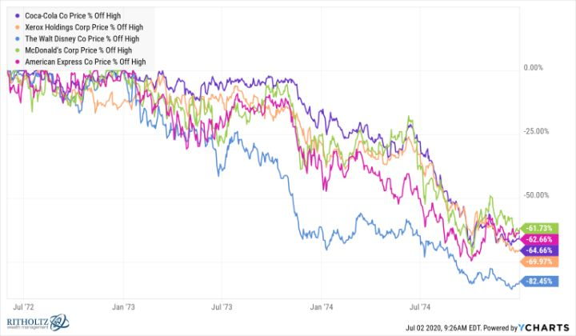
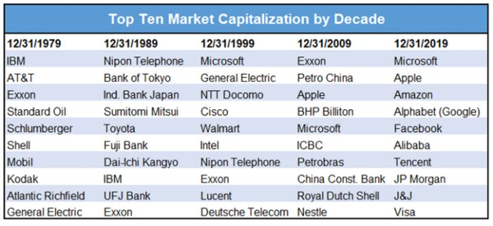

Kasvuyhtiöillä rikkaaksi helposti ja riskittömästi
Itselläni suurin menetetty tilaisuus viimeisen kolmen vuoden aikana on ollut pieni paino softa- pilvi- ja alustayhtiöissä. Oikeastaan yleisesti vahvasti kasvavissa yrityksissä. Se ei ollut valtava ongelma ennen tätä vuotta. Tänä vuonna kasvuyhtiöt etenkin ohjelmistoalalla ja suurissa teknologiayrityksissä ovat nousseet lähes pystysuoraan ylös.
Seuraavassa kuvaajassa on vertailu viimeiseltä kolmelta vuodelta teknologiavetoisesta Nasdaq 100 indeksistä ja Euroopan laajasta STOXX 600 indeksistä. Tänä vuonna Nasdaq on voittanut Euroopan osakkeet 40 % marginaalilla:

Vielä julmempi kuvaaja olisi, jos verrataan internetyhtiöiden tai pilvipalveluita tarjoavien yhtiöiden kurssikehitystä indekseihin. Kun osakkeet nousevat korkeille arvostuksille, on siihen yleensä hyvä selitys. Tällä kertaa se tuntuu olevan, että Covid-19 on nopeuttanut digitalisaatiota vuosikymmenellä, samalla kuin korot ovat painuneet pohjamutiin.
Olen pitänyt ohjelmistoyhtiöitä liiketoiminnan kannalta hyvin houkuttelevina. Olen nyökytellyt Marc Andreeseenin teesille, jonka mukaan softa syö maailman. Siinä on paljon järkeä. Ihmiskunta on hyvin taitava valmistamaan fyysisiä asioita, eikä siinä kilpailuedun saaminen ole enää helppoa. Sen sijaan ohjelmistojen tekemisessä huipputekijöistä on pulaa ja kilpailulla paljon esteitä.Nokia ei pärjännyt, koska ei ollut softassa huippua. Vaikkei jatkossa auton hinnasta kuin 5 % tulisi softasta, sen tekijä voi saada kaapattua merkittävän osan koko auton marginaalista.
Seppo Saarion kirjassa oli jo yli 20 vuotta sitten hyvä kuvaaja, miksi kasvavat softayhtiöt pitäisikin hinnoitella teollisuusyhtiöitä korkeammilla kertoimilla:

Kyse ei siis ole pelkästään tulosmarginaalista skaalautuvissa liiketoiminnoissa, vaan myös vapaasta kassavirrasta. Ohjelmistoyhtiön ei tarvitse jatkuvasti investoida uusiin tehtaisiin, joten kasvun myötä tuloksesta suurempi osuus on yhtiölle rahaa pankkitilillä.
Jos tiedämme yhtiön XYZ todella kehittyvän jo ennalta näin hyvin, on ihan perusteltavissa, että sen arvostus vastaa yhtiön ABC arvostusta jo lähtötilanteessa. On kuitenkin myös hyvä huomata, että Saario käyttää kuvan yhteydessä tietotekniikan kasvuyhtiöistä esimerkkeinä Jot Automationia ja Nokiaa. Niiden osakkeet ovat kirjan ostohetkestä menettäneet 20 vuodessa yli 90 % arvostaan. Markkinat eivät ennakolta tiedä voittajia ja arvostuksia oikein. Kasvuosakesijoittaja on pitkällä aikavälillä voittanut markkinatuotot vain valitsemalla ne kasvuyhtiöt, joiden kasvu jatkuu pitempään kuin muiden.
Ongelmani on ollut, että olen käyttänyt historiallisia arvostustasoja mittatikkuna. Sen takia olen myynyt Facebookin, Googlen, Amazonin ja pienenpien kasvuyhtiöiden osakkeet yleensä, kun ne ovat nousseet paljon. Aina ennekin hyviä kasvuyhtiöitä on saanut välillä myös vähän edullisemmin. No viimeiseen muutamaan vuoteen ei ole saanut. Ehkä parina päivänä kuluvan vuoden maaliskuussa tai 2018 vuoden loppupuolella hetken aikaa. On jäänyt lyhyt kasvuyhtiötikku käteen.
Viimeisen viiden vuoden aikana parhaiten ovat pärjänneet sijoittajat, jotka ovat sijoittaneet parhaiden ohjelmistojen kehittäjiin. Viimeisen viiden vuoden paras suomalaisrahasto HCP Focuksen salkusta ei löydy yhtään yhtiötä, jonka ydinosaamista ei olisi softa. Amazon, Alibaba, Baidu, Shopify, Facebook ja niin edelleen.
Tästä looginen johtopäätös on, että kannatta ladata kaikki sijoitukset tämänkaltaisiin yhtiöihin? Tässä homma muuttuu hieman monimutkaisemmaksi. Uskon kyllä, että edelleen voittajat löytämällä on mahdollisuus päästä hyviin tuottoihin, mutta…
Arvostustasot nopean kasvun yhtiössä ovat teknokuplaa lukuun ottamatta kaikkien aikojen huipussa (arvostuskertoimet P/E, P/S, P/CF, EV/EBIT jne.). Sijoittajat ovat jo laajasti tajunneet, että tulevaisuus on valoisa näille yhtiöille.
Havainnollistetaan tätä vertaamalla Microsoftia vuonna 1990 suhteessa tämän hetken yhteen kuumimmista yhtiöistä Shopify:n. Haluan tässä korostaa, että tiedämme nyt, että Microsoft on maailman toiseksi arvokkain yhtiö yli 1600 miljardin dollarin arvostuksella. Sen kurssi on siis 185-kertaistunut 29,6 vuodessa. Tämä tarkoittaa noin 19 % vuosituottoa. Microsoft on ollut hyvin kitsas osingonjakaja, mutta osingot huomioiden tuotoksi saadaan noin 20 % vuosituotto.
Seuraavassa Microsoftin luvut 1990-luvun alusta:

Sitten Shopifyn nykyiset luvut ja seuraavan kolmen vuoden ennusteet:

Itselläni ensimmäinen havainto on, että Spotifyn markkina-arvo on 125 miljardia dollaria, kun Microsoftin markkina-arvo oli vuoden 1990 lopussa 8,6 miljardia dollaria. Shopifyn liikevaihto oli 33 % korkeampi kuin, mutta Microsoftin kannattavuus ja kassavirta olivat todella paljon parempia. Joten oletetaan, että Microsoft oli vuoden 1990 lopussa suunnilleen yhtä houkutteleva kuin Shopify nyt.
Jälkikäteen voidaan toki huomioida, että Microsoft olisi pitänyt hinnoitella arvokkaammaksi. Yhtiö oli nykymittapuulla naurettavan halpa kasvuyhtiö.
Mutta jos käännetään tämä päälaelleen. Jos Microsoftin arvostus olisi ollut tuolloin 125 miljardia (Shopifyn nykyinen arvo), niin mikä sen tuotto olisi ollut vajaassa 30 vuodessa? Vastaus on noin 9 % vuodessa. Ei huono, mutta vastaa aikajakson markkinatuottoa.
Missä homma menee ongelmalliseksi on, että tiedämme että Microsoft on maailman toiseksi arvokkain yhtiö. Se on satumainen kasvutarina, joka hakee vertaistaan. Sen liikevaihto on noin 100-kertaistunut ja tulos lähes 150-kertaistunut. Eivät kaikki shopifyt voi kasvaa maailman arvokkaimmiksi firmoiksi.
Firma on hyvin johdettu ja älyttömän laadukas. Näin kalliillekaan osakkeelle indeksin voittaminen ei ole mahdotonta, mutta on hyviä perusteita, miksi se on epätodennäköistä.
Maksetulla hinnalla on aina väliä. Oli yritys kuinka hyvä tahansa. Kun yrityksiä aletaan hinnoittelemaan 20-80x liikevaihtoon nähden, niissä on odotuksissa jo pitkään jatkuva nopea kasvu ja hyvä kannattavuus. Silloin jää hyvin vähän turvamarginaalia pienillekään pettymyksille.
Maailma on toki erilainen kuin 20-30 vuotta sitten. Yritykset pystyvät skaalaamaan liiketoimintaa nopeammin globaalisti. Laadukkaille yhtiöille kuuluukin korkeammat hinnoittelukertoimet kuin ennen.
Mutta jossain vaiheessa tulee vaihe, jossa kori kalleimpia osakkeita on vain liian kallis. Yksittäiset yhtiöt voivat silti tuottaa hyvin, mutta itse kori luultavasti on pettymys.
Vaikka olin väärässä varovaisuudessani kasvuyhtiöissä, en haluaisi olla toista kertaa väärässä hypätessäni karavaaniin, joka on valmis maksamaan laadukkaistakaan kasvuyrityksistä melkein mitä tahansa. Silti junasta jääneenkin on hyvä myöntää, että olemme luultavasti siirtyneet vasta aliarvostuksesta yliarvostukseen, mutta teknokuplan aikaiset täydet järjettömyydet ovat vielä harvassa. Toki niitäkin on alkanut ilmestyä kiihtyvään tahtiin sijoittajien villiintyessä kasvuyhtiöihin. Miljardihintoja joutuu jo maksamaan yhtiöistä, joilla on lähinnä prototyyppi tai kaunis tulevaisuuden visio. Kun korot ovat nollassa, on helppo kehittää narratiivi, jonka perusteella kasvuyhtiöt voidaan hinnoitella vielä korkeammallekin. Se taas heikentäisi niiden pitkän aikavälin tuotto-odotuksia entisestään.
Tärkein oppi kasvuyhtiöihin sijoittamisesta viime vuosilta lienee tämä: Kun löydät laadukkaan kasvuyhtiön järkevään hintaan, älä yritä olla liian nokkela. Kun myyt 40 % voitolla, on paljon vaikeampi hypätä uudestaan kyytiin lisänousun jälkeen. Oppi ei mielestäni kuitenkaan ole se, että kannattaisi täysin unohtaa yhtiöiden arvostus.
FANGMAN
Aika paljon puhutaan kuplasta FANGMAN-yhtiöissä (Facebook, Apple ,Nvidia, Google, Microsoft, Amazon ja Netflix). Niiden kurssit ovat nousseet paljon, mutta kupla on ihan eri asia kuin hintojen nousu. Ei ole kovin vaikea argumentoida, että hinnat olisivat viisi vuotta sitten olleet liian alhaisia, ja nyt yhtiöiden laatu hinnoitellaan paremmin. Emme ole juuri ennen nähneet näin isojen yhtiöiden kasvavan näin nopeasti ja kannattavasti. Kasvuvauhdin säilyminen näinkin hyvällä tasolla on ollut yllätys. Toki näissäkin on eroja, Applen kasvu on ollut pitempään hyvin rauhallista, kun taas Amazonin ja Netflixin hyvin vauhdikasta.
Nykyistä tilannetta voisi verrata 1970-luvun alun Nifty Fiftyyn. Alla Ben Carlssonin kuvaus ja graafi sen hetkisestä tilanteesta:
"There was a nasty bear market from 1968-1970 which saw the S&P 500 fall 36% but smaller and value stocks get hit even harder. So investors came out of that downturn more enamored with bigger, growth-oriented companies.
These blue chip stocks with high growth characteristics became known as the Nifty Fifty and included the likes of Polaroid, Xerox, McDonald’s, Coca-Cola, IBM and JC Penney. The average price-to-earnings of the Nifty Fifty was 42x, more than double the 19x P/E ratio for the S&P 500 at large. More than 20% of these companies had P/E ratios in excess of 50x earnings by the end of 1972.
What happened next to these “one decision” stocks is a tale as old at time. They got too far ahead of themselves and crashed even harder than the market at large during the bear market of 1973-1974. Here are the drawdowns for a handful of these names:"

Ensimmäinen huomio on, että ympäristö kuulostaa tutulta suhteessa nykytilanteeseen: Rankan indeksilaskun jälkeen pienet yhtiöt kärsivät eniten ja suositut kasvuyhtiöt raketoivat nopeasti. Sen aikainen iskuryhmä (Esimerkkeinä Coca-Cola, Xerox, Disney, McDonald’s, AMEX) oli hinnoiteltu tulokseen ja kassavirtaan nähden jokseenkin samoin kuin FANGMAN nyt. Kuten Graafista näkyy, sen hetken laadukkaat kasvunimet laskivat todella reilusti sen jälkeen, kun ne oli ostettu liian korkeille tasoille. Kuitenkin muutaman nimen (Wal-Mart, ADP, EDS) todella hyvän kurssikehityksen myötä 50 kuuman osakkeen kori hävisi vain hieman S&P500 indeksille seuraavan 30 vuoden aikana. Mutta on myös huomioida, että vuoden 1972 jälkeinen vuosikymmen oli todella surkea näille osakkeille.
Historia on myös osoittanut, että markkina-arvoltaan suurimpiin yhtiöihin sijoittamalla on saanut keskimäärin heikkoja tuottoja. Yritykset ovat aiemmin vaihtuneet vuosikymmenittäin tiheästi:

Itse uskon, että tällä kertaa asiat ovat jossain määrin toisin. Silti ei kannata täysin jättää huomiotta, että aiemminkin markkinan gorilloita on pidetty voittamattomina, mutta tuotot suurimmista osakkeista ovat hävinneet markkinatuotolle reilusti. Sama sykli, jossa voittavia osakkeita ostetaan hinnasta välittämättä, on toistunut monesti, päätyen aina aiemmin heikosti. Myös vuosina 1972 ja 1999 sijoittajien mielestä oli alkanut uusi aikakausi, mutta kasvuyhtiöt teurastettiin täysin myöhempinä vuosina.
FANGMAN osakkeilla on paikkansa sijoittajien salkuissa. Meidän sijoitusyhtiömme luopui Amazonista ja Googlesta toisella neljänneksellä. Toistaiseksi näyttää siltä, että taas liian aikaisin. Osakkeet näyttävät täyteen hinnoitelluilta. Yhtiöiden markkina-asema on vahva ja kilpailun esteet merkittävät. Vaakakupin toisella puolella on sääntelyn, verotuksen ja arvostuksen riskit. Kuitenkin riskien puolesta suuret kasvuyhtiöt ovat huomattavasti turvallisempia kuin 50-kertaisesti liikevaihtoon arvostetut pienemmät kasvuyhtiöt.
Tällä hetkellä naapurisi tekee luultavasti omaisuuksia kasvuyhtiöillään. Arvosijoittajat ovat sammaloituneita idiootteja. Osake saattaa nousta 2000 % yhdellä tiedotteella, splitit nostavat osakkeiden arvoa ja kuumat annit viisinkertaistuvat ensimmäisenä päivänä. Silti vähän pidemmällä aikavälillä osakkeesta maksetulla hinnalla on aina ollut väliä ja aina tulee olemaan. Sillä ei ole välttämättä väliä vielä vuoden päästä, mutta pitkällä aikavälillä on.
Pää kannattaa pitää kylmänä. Sekä jyrkässä laskumarkkinassa kuin nousumarkkinassakin kannattaa taistella ahneuden ja pelon tunteita vastaan. Asiat harvoin ovat niin hyvin kuin innostuneet sijoittajat toivovat tai niin huonosti kuin pelokkaat sijoittajat pelkäävät.